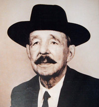

Forums galactiques > Taverne galactique : lieu de discussion informel > Le p'tit bar du coin
| Battosai Réputation à la taverne : 37  27/08 ETU 23:50 | Score : 0 Détails Après quelque baillement Battosai alla parler au barman.
Je vais prendre une chambre et demain je vais prendre croissants et un grand bole de riesling. Merci et a demain. Et il parti se coucher. | ||
| Sarah Réputation à la taverne : 162  31/08 ETU 18:15 | Score : 2 Détails Sarah entra dans le bar et, après avoir salué discrètement le serveur, elle alla directement à une table au fond de la salle…. Elle avait besoin de se calmer et de réfléchir. Peu de monde ce soir, cela tombait bien ! Elle commanda un verre, l’attendit quelques minutes, et y trempa ses lèvres dès que le serveur le lui apporta. Puis elle s’abîma dans ses réflexions…..
Mais où suis-je donc tombée ? Partout je n’entends qu’injures, propos mesquins, bêtises sans nom, coups de gueule insipides, menaces vulgaires, rancunes enkystées, guerres infondées, crimes inexplicables, haine et stupidité, haine et mauvaise foi, haine et soif de sang, haine … partout ! … Mes histoires ne servent à rien, ils ne savent pas écouter, ils ne veulent pas comprendre… Je ne sers à rien ici… Avisant un groupe de commandants qui chahutaient bruyamment à l’autre bout de la salle, elle eut un sourire sans joie. … et il y en aura toujours qui s’en foutent ! Elle ferma les yeux pour faire le vide dans son esprit et fut envahie par le souvenir d’un baiser ardent… …et il y a lui… lui qui m’attend… avec ses yeux de mer tranquille… lui avec ses mains douces et impérieuses… lui avec ses mots empreints de désespoir… lui avec sa bouche… sa bouche… dont je rêve à chaque instant… Sarah se sentit un peu mieux et finit son verre avec lenteur…. Ce n’était pas encore l’heure de se mettre en route. | ||
| Michel Morice Réputation à la taverne : 53  31/08 ETU 18:30 | Score : 3 Détails Michel était dans l’assemblée quand il vit une jeune femme partir en trombe apparemment furieuse. Il la suivit en quittant Albat0r. Elle courait à présent, se précipitant à la taverne. Elle passa une petite porte et y entra. Le vieux chercheur en fit de même et se retrouva dans un petit bar. Le chercheur regarda autour de lui et ne la vit… Mais où pouvait t’elle être pensa t’il. Il se frotta la barbe, geste qu’il aimait tant faire en ce moment… Peut être à cause des années qui lui tombaient si vite dessus… Il alla vers le bar et demanda un whisky…
Puis il la vit finalement… Elle était au fond de l’assemblée, elle se tenait la tête visiblement énervé… Il alla vers elle et lui dit : « Puis je me joindre à vous ? » | ||
| Sarah Réputation à la taverne : 162 31/08 ETU 18:39 | Score : 1 Détails Sarah fut tirée de ses rêveries...
Asseyez-vous commandant. J'ai un peu de temps devant moi et je vais commander un autre verre.... Je vous ai écouté à l'Assemblée... mais je ne vous connais pas. Vous n'y intervenez pas souvent, hein ? ... J'ai cru comprendre que vous étiez un ami du samouraï ? Vous en êtes le bras exécutif ? Que devient-il ? ..... Pardonnez-moi, mais les querelles me fatiguent... et je n'y comprends rien ! Ce soir, j'ai plutôt envie d'une discussion intructive... Sarah scrutait le visage de Morice et se demandait ce qu'il attendait de cette rencontre. | ||
| Herdes. Réputation à la taverne : 377  31/08 ETU 18:40 | Score : 2 Détails "Ce soir, j'ai plutôt envie d'une discussion instructive..."
On parle de moi? ah? non? La sortie...Ouai c'est bon je connais | ||
| Sarah Réputation à la taverne : 162 31/08 ETU 18:43 | Score : 0 Détails
Mais non, Herdés, ne sortez pas... Depuis le temps que je vous dois un verre !^^ Rejoignez-nous... Cessez de faire le pitre pour cacher cette timidité dont vous savez bien qu'elle m'enchante... | ||
| Michel Morice Réputation à la taverne : 53 31/08 ETU 18:52 | Score : 2 Détails Le chercheur s’assit… Il était finalement qu’un timide vieux chercheur, habitué à être dans son laboratoire…
Il regarda Sarah et lui répondit : « Je suis un chercheur très occupé alors je ne parle pas souvent sur l’assemblée et je laisse mon amis géré tout cela… Je ne suis qu’un petit chercheur qui étudie des planètes vertes à travers la galaxie… J’ai rencontré Ujio quand on me là présenter pour qu’il me défende et depuis nous avons tissé une amitié vraiment belle. Vous savez ce n’est pas quelqu’un de méchant, juste un samouraï avec une fierté qui dépasse celle de beaucoup de monde… Ce n’est aussi point mon bras exécutif, juste un ami qui me défend en vue de mes recherches… Je vous avoue que je ne suis pas trop ces discutions atypique… Entre les profiteurs et les escrocs je ne vois pas grand intérêt. M’enfin vous savez Ujio m’a un peu raconter ce qui se passait avec le commandant Albat0r et comme il est à l’hôpital en ce moment je suis en quelque sorte son porte parole… Et vous mademoiselle cela fais longtemps que vous êtes dans cette noble assemblée ? Quelle sont vos butes, que recherchez vous ? Dites le moi si je vous ennuie avec mes questions… » Michel bu une gorgé de son whisky et regarda attentivement Sarah dans les yeux… Elle en avait de vraiment magnifique et il se demandait comment une charmante jeune femme pouvait être seule. Il regarda l’homme à coté de lui qu’il ne connaissait pas et repris une gorgé. | ||
| Ryuk Réputation à la taverne : 43  31/08 ETU 19:06 | Score : 1 Détails Ryuk entra en trombe dans la taverne la tristesse le submergeant
- Tous des salauds!!!! Veulent même pas m'envoyer à la Poubelle, saint sanctuaire des boulets. Aprés ce discours bref mais clair, Ryuk alla au bar commandant une premiére vodka, puis une deuxiéme, puis une troisiéme ,.........,puis une trente-cinquiéme et s'écroula comme une masse en marmonant - Tsou gnééé saloooo. | ||
| Sarah Réputation à la taverne : 162 31/08 ETU 19:13 | Score : 0 Détails Sarah commençait à s'amuser...
Ce que je recherche, Commandant ? Ah si vous saviez !.... Je suis une idéologiste, une rêveuse... mais je sais agir ! Malheureusement, ici, je me sens un peu déplacée... Comment vous dire ? Je cherche quelque chose qui n'existe pas ! Sarah éclata de rire... un rire clair et juvénile... Puis elle reprit son sérieux Le Barbare est malade ? Son coeur ??? | ||
| Michel Morice Réputation à la taverne : 53 31/08 ETU 19:19 | Score : 1 Détails Il a prit la foudre. Il sort lundi de l'hopital.
Puis je vous payer un verra ? | ||
| Herdes. Réputation à la taverne : 377 31/08 ETU 19:22 | Score : 1 Détails Et ouai...Quand on voit sarah, c'est forcement le coup de foudre.
Roh encore? mais je viens juste de rentrer! | ||
| Sarah Réputation à la taverne : 162 31/08 ETU 19:27 | Score : 2 Détails
J'accepte votre verre, Commandant. Et puis je vais partir... j'ai à faire dans un palais...où je ne voudrais pas être en retard ! Mais cela m'a fait plaisir de vous rencontrer... et saluez le Barbare de ma part. Souhaitez lui un prompt rétablissement. Je sais qu'il n'est pas aussi méchant que ce que les autres veulent bien le laisser entendre... ni aussi mesquin... Mon coeur ne m'a jamais trompée. Gartifiant Herdes d'une moue moqueuse, Sarah trinqua une dernière fois avec les deux Commanadants et prit congé... Les étoiles allaient s'allumer. | ||
| karadoc Réputation à la taverne : 21  31/08 ETU 22:00 | Score : 1 Détails Karadoc et son amie arrivèrent dans le petit bar du coin, Karadoc se dirigea vers le tavernier:
"-Salut, tu vas bien? est ce que tu pourrais me donner ta meilleur table, je veux que ca soit assez romantique, puisque l'établissement ne l'est pas.... et puis j'aimerais que l'on soit un peu isolés. -Oui, t'inquiète j'ai la meilleur table elle est tout la bas au fond elle est déja prête, vous pouvez allez vous y installez. -Ok, merci et a la fin du repas pas la peine d'apporter la note, parceque je connait Talia elle voudra payer...." Karadoc se dirigea vers son amie, puis ils allèrent a la table du fond, Karadoc fit s'asseoir Talia, puis s'installa en face, ils commencèrent a parler en attendant la carte. | ||
| Talia Réputation à la taverne : 34  31/08 ETU 22:08 | Score : 2 Détails Je trouve cette endroie joli et familliale. Il faudra que je félicite la patronne. Sinon, comment se passe les affaires dans ta discothèque ? En tout cas j'aime bien la décoration.
| ||
| karadoc Réputation à la taverne : 21 31/08 ETU 22:10 | Score : 1 Détails Oh et bien pour l'instant, je n'ai pas beaucoups de clients au casino, et j'ai pas mal de clients en discothèque, mais bon, si jamais le casino continue comme ca, je le fermerais et j'agrandirais la boite de nuit.
Et toi, qu'est ce que tu deviens? | ||
| Talia Réputation à la taverne : 34 31/08 ETU 22:15 | Score : 0 Détails Tu auras plus de client donc si tu l'agrandis.
Moi, Je vit au jour le jour et j'essaye le plus possible de satisfaire les envies de mon entourage. Sinon, les affaires se passe bien ? | ||
| Battosai Réputation à la taverne : 37 31/08 ETU 22:16 | Score : 0 Détails Batossai entra dans le bar et vit karadoc.
Il s'avança dans sa direction mais lorsqu'il vit Talia il se dit qu'il fallait les laissé. Il alla au comptoir. Eh barman,on dirait que y'a de l'amour dans l'air. Et donne moi une vodka. Et ne leur apporte pas leur note c'est moi qui vait la payer. Et il bu sa vodka dans son coin. | ||
| karadoc Réputation à la taverne : 21 31/08 ETU 22:17 | Score : 0 Détails Et je crois que tu y arrive a rendre ton entourage heureux.
Et oui, mes affaires ce sont améliorées. Karadoc vit le Barman arrivé: "Voulez vous un apéritif? -Oui, apporte nous une coupe de champagne, répondit Karadoc. -Tout de suite." Et toi, tes affaires au marché ont l'air de marché? | ||
| Talia Réputation à la taverne : 34 31/08 ETU 22:27 | Score : 0 Détails Et bien j'ai Dame Yuna qui me fait d'inombrable cadeau, donc j'aprécis énormément. D'ailleur, suite à cela nous avons papotté par MP et elle est devenu ma marraine.
Avant que la barman ne parte, Talia modifia la commande. Vous me metterez un cocktail à la place, je n'aime pas trop l'alcool. si tu as besoin de quelque chose Karadoc, dis le moi et j'esserais de te trouver ça. | ||
| Marcus Flavius Réputation à la taverne : 32  31/08 ETU 22:33 | Score : 0 Détails Marcus venait d'entrer depuis quelque minutes déjà dans cette pièce et écoutait attentivement tout ce qui se disait...Tantôt, il était d'accord, notamment au sujet de la beauté de Sarah.; tantôt il était en complet désaccord et trouvait même quelques propos complètement stupide...Mais admettant que ceci n'était qu'un avis personnel, et préférant faire preuve de tolérance, comme à son habitue, Marcus s'en alla rejoindre ses pénates...
|
Forums galactiques > Taverne galactique : lieu de discussion informel > Le p'tit bar du coin